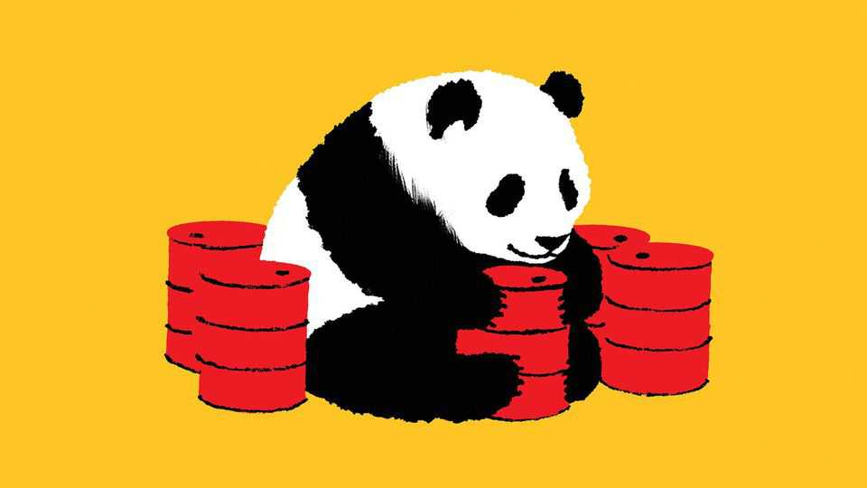
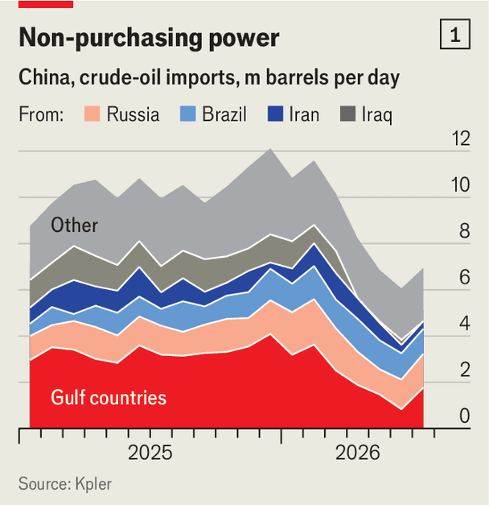
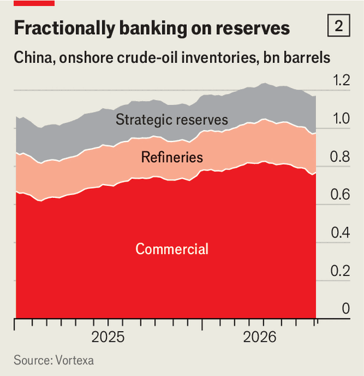
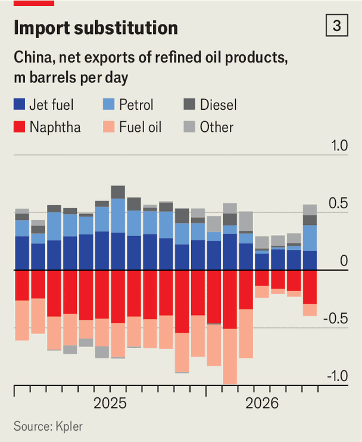
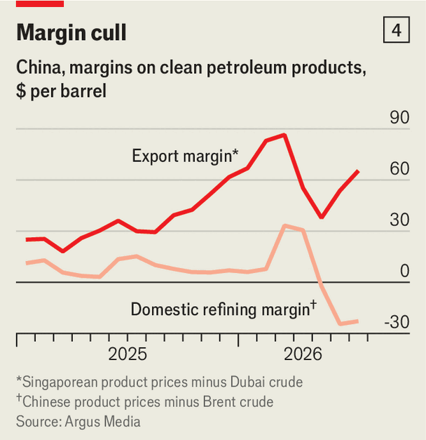

China is now the world’s great oil power
Forget OPEC. The Chinese Communist Party calls the shots

Aug 13th 2026
THE IRAN war has caused the largest supply shock in petroleum history. Yet even when fighting was most intense, oil prices never reached the $150 a barrel many analysts had predicted at the start of the conflict. For this, thank a few governments. Soon after Iranian munitions made the Strait of Hormuz unpassable, trapping 14m barrels a day (b/d) of crude inside the Gulf, petro-monarchs in Abu Dhabi and Riyadh directed an extra 5m b/d through pipes bypassing the conduit. Ministers in Washington and Tokyo released a record 2m b/d of emergency stocks; state-led rationing in poorer countries shaved off a chunk of demand.
But disaster would still have struck without decisions quietly taken in another capital: Beijing. Between February and June, China slashed its crude imports by half, or 5.5m b/d—enough, experts reckon, to have shaved $30 or more off Brent, the global benchmark. That is more than half of the worldwide decline during the covid-19 lockdowns, when global demand collapsed by 9m b/d. And in contrast to the pandemic, when the world economy slid into recession, China’s GDP has chugged along just fine. It has not been buying less foreign crude because its economy is suffering.

This ability to turn oil demand on and off, ostensibly at low economic cost, allows the world’s biggest oil importer to move prices just as the Organisation of the Petroleum Exporting Countries (OPEC) and its allies have long done through their control of half of global output. And as the cartel is weakened by the recent departure of the United Arab Emirates and strained production capacity of its remaining Gulf members, China’s market power is growing. As one oil-trading boss puts it, “China is the new OPEC.”
For four decades OPEC has striven to keep prices high using production quotas. Importers cannot conversely keep prices low by rationing demand, because buyers are much more fragmented than sellers and because domestic energy demand is the result of decisions by countless agents. Huge, statist China is the exception. And unlike OPEC+, whose decisions require agreement among 21 countries, its central planners can act unilaterally on the orders of one man, President Xi Jinping.
China moves petroleum markets using three main levers. The first is its national petroleum stocks. In the 12 months to early 2026, as the spectre of a “superglut” depressed crude prices, China snapped up 200m barrels on the cheap, topping up already ample reserves of 1bn barrels. Traders reckon Chinese purchases may have added $10-20 to the global price of a barrel before the Iran war broke out. Of the 11.6m b/d China imported in February, up to 1m b/d were excess purchases it could subsequently forgo by stockpiling less.

Once its last pre-war Gulf cargoes had arrived in late April, China began drawing down these brimming reserves. By July its inventories had fallen by 70m barrels, according to Vortexa, a data firm, not counting draws from floating storage and hidden caves. Add these in, and China tapped 150m barrels in those three months, or some 1.5m b/d.
Commercial stocks—held by the profit-seeking storage arms of big oil firms—rather than strategic reserves accounted for most of this. Refiners must usually replace what they draw within a month, notes Tom Reed of Argus Media, a price-reporting agency. But since those firms are state-owned, and the state can requisition commercial stock, an exemption was presumably made.
Add the 1m b/d no longer being stockpiled and 1.5m b/d in drawdowns, and stock management may account for 2.5m b/d of the 5.5m b/d fall in imports. China could keep this going for another four months before rulers in Beijing started to worry about uncomfortably low stock levels, reckons Emma Li of Vortexa.

Chinese central planners’ second lever is export controls. As the world’s second-largest oil refiner, China is usually a big fuel supplier to its Asian neighbours. In March, however, the government ordered domestic refiners to stop signing new export contracts and unwind many of those already agreed. Between February and April, China’s exports of refined products fell by nearly half to 430,000 b/d. This included 180,000 b/d of highly refined jet fuel, which saved Chinese refineries 1.2m-1.8m b/d of crude.
Restricting foreign sales allows China to use more of its refinery output domestically. It also lets refiners use some crude that would normally go into products for export to make other critical products, some of which China normally gets from the Gulf for domestic use. Examples include naphtha and liquefied petroleum gas (LPG), two petrochemical feedstocks, and fuel oil, which small, cash-strapped refiners often process instead of crude. The hit to refiners’ margins, which are higher for export than for domestic sales, is something the Communist Party can stomach.
However, ample stocks and restricted exports are not by themselves enough to explain the gargantuan reduction in Chinese imports. The Chinese government also pulled a third lever—curbing domestic demand. In June Chinese refineries processed 2.7m fewer b/d of crude than a year earlier. Production of petrol fell by 14%; output of diesel and jet fuel both shrunk by 21%.

A look under the bonnet confirms a sharp drop in Chinese motor-fuel use. As the authorities allowed fuel prices to rise, many city dwellers have stopped driving to work, opting instead for the metro, bicycles or taxis (many of which are battery-powered). During a week-long national holiday in May, electric-vehicle charging along motorways rose by nearly 55% compared with the year before. Trains are picking up the slack from domestic flights, the number of which has been slashed. Local authorities have postponed infrastructure works, saving on diesel. Ciarán Healy of the International Energy Agency reckons China burnt 10% less petrol and kerosene in the war’s first couple of months than in the same period a year earlier.
China’s petrochemical industry, the world’s biggest, is also adapting to the straitened circumstances. Last year it turned millions of barrels per day of naphtha and LPG, a lot from the Gulf, into polymers—materials ranging from PVC and synthetic rubber to nylon and polyester—which Chinese factories use by the tonne. In the absence of Gulf-sourced feedstocks, and in the presence of a government edict to prioritise fuel over feedstocks, petrochemicals firms have instead come up with ways to make some polymers using coal and ethane, a gaseous byproduct of petroleum refining.
The overall impact of all this belt-tightening on China’s economy looks to be manageable. Years of state-backed investment in renewables and green transport has made the energy system more flexible. Years of “involution”, where fierce competition has led to overcapacity in industries including petrochemicals, has left China with large unsold inventories of polymers and the stuff these go into.
Such buffers explain why producer prices are not spiking and consumer prices remain under control. Although GDP grew by 4.3% in the second quarter, the slowest since late 2022, this owes more to weak investment and a hangover from a property crisis than to an oil shortage. And the government can still tap its strategic oil reserves, which it has barely touched, notes Michal Meidan of the Oxford Institute for Energy Studies, a think-tank.
Chinese stocks of crude, fuels and polymers, though bigger than outsiders realised, are finite. One distributor says he just sold a cargo of polyethylene that had sat in his warehouse since 2021. In contrast to OPEC, which can, in principle, sustain production cuts for years, China cannot keep importing 5.5m b/d less than usual indefinitely. But the Iran war has shown that, in practice, China can singlehandedly stabilise the global oil market over a period of many months. Leaders of the increasingly fractious oil cartel can only dream of doing the same.■